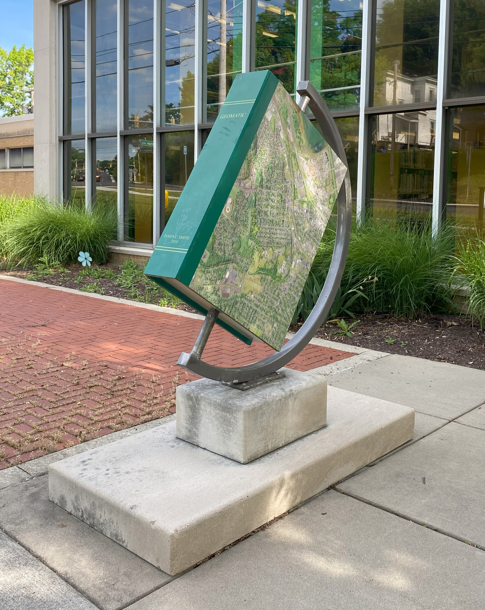
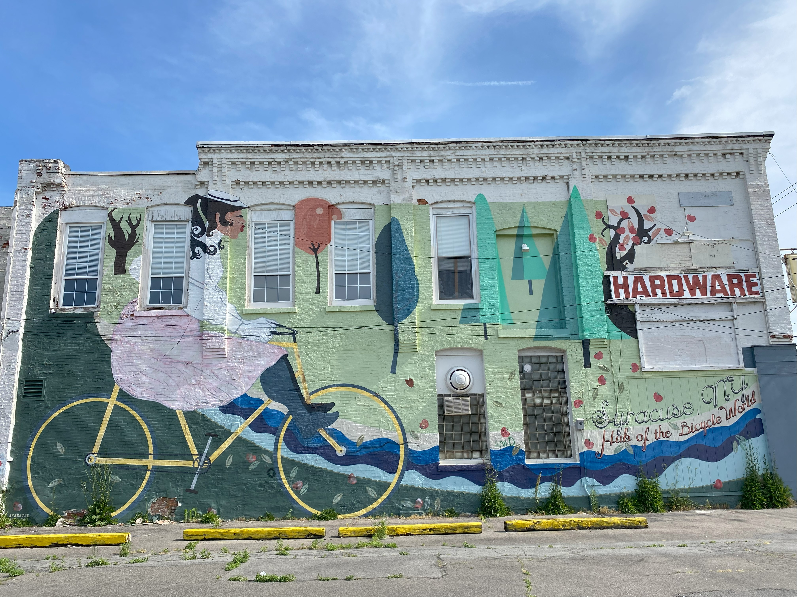
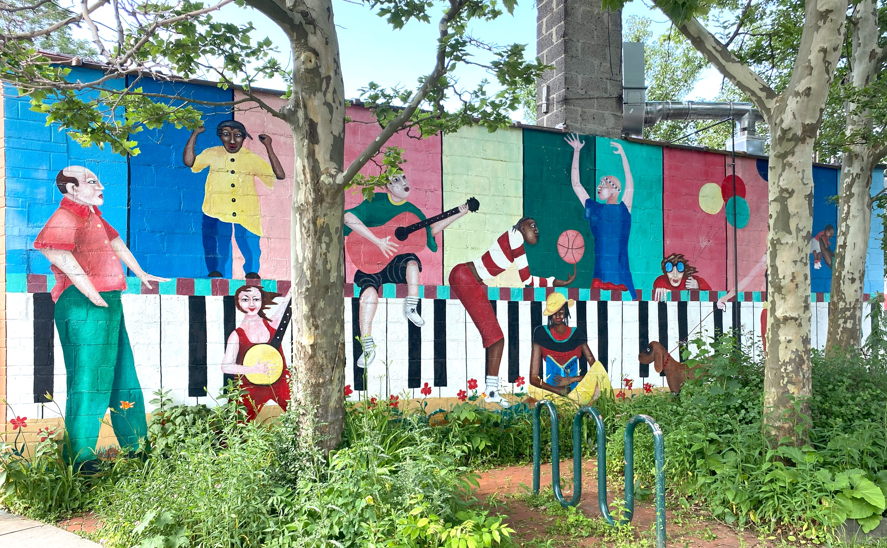
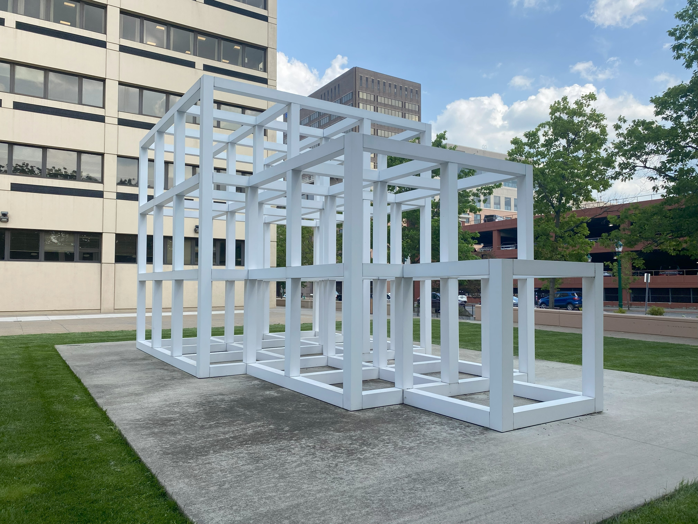

Artworks left to right: Westside Geomatic - James Earle Smith, Bicycle Capital of the World - Jacob Roberts, Mom's Diner Mosaic, Community Mural - Micheal Moody, One, Two, Three - Sol Lewitt
The Syracuse Public Arts Commission is a group of volunteers from the community, elected by the mayor or the Common Council, who evaluate proposals for public art in the city. They assess logistical details like legal parameters and city ordinances. Then they host a public meeting to hear from the artist or organization creating the artwork and decide to approve or deny the proposal. Many of the commission members are artists themselves and they act as a bridge between the community and city officials. Bennie Guzman has been in the commission since 2022 and currently serves as the chair of the group.
“We work very closely with different organizations here. We are connected with different arts and community-based organizations. We very much stay in touch with them, but also work closely with the different city entities,” said Guzman.
Enacted in 2014, Comprehensive Plan 2040 highlights goals for the future in Syracuse as well as detailed plans of action to fulfill those goals. Included in this proposal is the Syracuse Public Art Plan. This plan highlights four primary goals: make public art a community priority in Syracuse, ensure and celebrate the diversity of public art in the city, capitalize on the economic opportunities associated with public art, and establish Downtown Syracuse as the public art showcase of the region.
The Syracuse Public Art Commission published a dataset documenting all of the public art pieces in the city from 1900 to present. This data highlights the artist, date the piece was erected, title of the work, type of art, street location and coordinates, and a URL with an image of the work. The data demonstrates the substantial growth in the amount of public art pieces in Syracuse that the Syracuse Public art plan caused, exemplifying the plan’s goal of making public art a priority in the city. The number of public art pieces rose from 50 to 96 in that time period.
Guzman said that though he and the commission appreciate the dominant amount of murals, they want to see more mediums represented and have ideas for even more variety.
“How can we continue to expand what we've been doing to not just include the murals, which I definitely think we want to continue doing, but how do we expand that into other realms of the arts?” said Guzman, “What are some other public artworks that we can incorporate? Things like video art, digital art, sculptural work, and especially thinking about expanding into the performing arts as well in some of our public parks and other areas.”
An additional goal that the Public Art Plan focused on was highlighting downtown Syracuse as a public art hub. This objective was achieved in the years following the enactment of the plan. Downtown is an outlier in the data and 21% of the public artworks in Syracuse are installed downtown.
The Urban Institute published in a research report that integrating art into a community can strengthen it in many ways. First, it can activate underused spaces and encourage people to explore new parts of their city. It can provide career opportunities and support local artists. It can represent a variety of cultural perspectives and support empathy among neighbors. It can create community spaces for people to interact and get involved in their city. The Public Art Plan’s goal was to connect the community and support its diverse cultural heritage by making downtown Syracuse a public art hub. The Urban Institute’s research aligns with this goal.
In January of 2026, Sharon Owens will take office as the new mayor of Syracuse. Additionally, city officials have begun work on Comprehensive Plan 2050, the replacement of Comprehensive Plan 2040 that originally put the Syracuse Public Art Plan in place. The Syracuse Public Arts Commission plans to continue the positive growth that the plan caused by pushing for inclusion in the new plan and recognition from the new mayoral administration. They said that public art is important because it can benefit the community in many ways.
Guzman said that public art plays a big role in uniting Syracuse residents and that art should be encouraged and supported.
“It creates a sense of civic pride,” said Guzman “When you go into an area and you see something beautiful that represents either you, your community, the beautiful things that the city has to offer, it continues to inspire hope.”